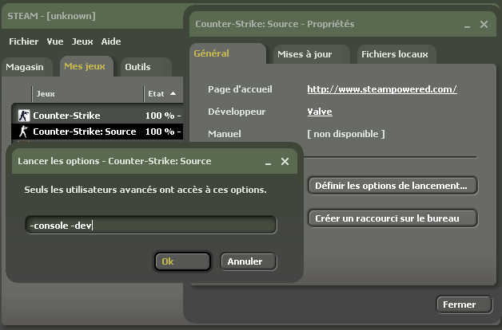

Le sujet pour le moins houleux du Netcode des FPS fourmille d'idées reçues et autres affirmations gratuites. Ainsi, on trouve souvent sur les forums des recommandations de ce style : "Règle ton cl_updaterate / cl_cmdrate à XX et tu lagueras 10 fois moins / ton ping descendra de 10 ms / tu seras intouchable", alors que leurs auteurs n'ont en réalité effectué que des tests très subjectifs, souvent dénués de toute méthodologie, alors qu'eux-mêmes n'ont souvent aucune idée de ce dont ils parlent.
Dans le but de changer cet état des choses, j'ai réalisé une étude poussée et méthodique du comportement de la partie réseau de Source. Je livre dans ce tutoriel le fruit de mon travail, c'est-à-dire la réponse à la question "Quelle est la configuration optimale ?" que se posent beaucoup de joueurs.
Le moteur Source, comme la plupart des FPS, permet d'utiliser une interface pour envoyer des commandes, ou modifier les paramètres du moteur de jeu. Cette interface est appelée console. Pour faire simple, il s'agit d'un bloc dans lequel défile du texte vous donnant des indications sur l'état actuel du moteur. En dessous de ce bloc se trouve un champ de texte permettant d'entrer des commandes. Ceux qui ont déjà vu une invite de commandes sous Windows ou un terminal Linux sauront de quoi je parle ; pour les autres, vous comprendrez quand vous la verrez. ;)
Comment accède-t-on à cette console ?
Il existe plusieurs moyens de l'afficher : je vais ici vous présenter celui que j'utilise ; bien évidemment, si vous utilisez un autre moyen, ne changez pas vos habitudes pour moi. ^^
Allez dans la section "Jeux" de Steam.
Faites un clic droit sur le jeu concerné (par exemple, Counter-Strike Source).
Cliquez sur "Propriétés".
Cliquez sur "Définir les options de lancement..."
Entrez "-console -dev" (sans les guillemets bien entendu), puis validez.

Ensuite, pour accéder à la console, il vous suffira d'appuyer sur la touche "echap" lorsque vous jouez, et vous aurez alors la console sous les yeux.
Les fichiers de démarrage
Lorsque vous démarrez votre jeu, celui-ci doit définir un certain nombre d'options, telles que votre nom dans le jeu, votre configuration des touches, la sensibilité de votre souris, etc. Ces options sont en réalité des commandes console, qui sont stockées dans des fichiers spécifiques, lesquels sont exécutés au démarrage du jeu.
Tous ces fichiers de démarrage sont situés dans le sous-répertoire "cfg" du répertoire où est stocké le jeu (par exemple : C:\program Files\Steam\steamapps\e-t172\counter-strike source\cstrike\cfg). Il y a 4 fichiers lancés au démarrage, les voici dans l'ordre dans lequel ils sont exécutés :
userconfig.cfg
config.cfg : on ne modifiera jamais ce fichier, car il est effacé et réécrit par le moteur à chaque fois que vous modifiez les paramètres du jeu via le menu Options.
valve.rc
autoexec.cfg (lancé par le précédent : en effet, le fichier valve.rc contient la ligne "exec autoexec.cfg")
Ainsi, placer des commandes dans le fichier userconfig.cfg doit être fait avec précaution, car ces commandes risquent d'être écrasées par le fichier config.cfg généré par le moteur. Par conséquent, je vous recommande de placer toutes les commandes que vous souhaitez exécuter au démarrage dans le fichier autoexec.cfg, qui, de cette manière, ne risque pas d'être "écrasé".
Commandes et CVARs
Il y a deux types d'instructions que vous pouvez donner à la console (que ce soit en jeu, ou dans un fichier de démarrage) : les commandes et les CVARs.
Les commandes
Une commande est un simple mot qui demande au moteur d'effectuer une action précise. Elle prend parfois des paramètres. Nous n'utiliserons aucune commande dans ce tuto. Exemple : "echo Texte à afficher dans la console" ou "connect 193.27.10.33:27015" ou encore "retry".
Les CVARs
Une CVAR, pour Configuration VARiable, est comme son nom l'indique, un paramètre que l'on peut modifier.
En entrant simplement le nom de la CVAR dans la console, par exemple : "cl_interp" (que l'on étudiera plus loin dans ce tuto), on obtient des informations intéressantes sur son contenu et son fonctionnement :
] cl_interp
"cl_interp" = "0.010000" ( def. "0.1" ) min. 0.010000 max. 1.000000
client
- Interpolate object positions starting this many seconds in past
Comme vous pouvez le voir, le moteur nous indique plusieurs informations au sujet de cette CVAR, notamment sa valeur actuelle (0.01), sa valeur par défaut (0.1), sa valeur minimale (0.01) et sa valeur maximale (1.0), ainsi qu'une brève description.
Pour définir une CVAR à une certaine valeur, il suffit d'écrire le nom de la CVAR suivi de la valeur qu'on souhaite lui faire prendre, exemple :
] cl_interp 0.1
Cette fois-ci, la console ne vous répondra rien - ceci est normal.
Lorsque vous jouez en multijoueur sur un FPS, trois types de problèmes peuvent survenir : les problèmes de latence, de choke et de loss. Il faut également veiller à obtenir une simulation (c'est-à-dire un jeu) la plus fidèle possible à celle du serveur.
La latence
La latence, aussi appelée ping, désigne le temps que prend un paquet de données pour passer d'un ordinateur à un autre : dans notre cas, de votre jeu au serveur.
Contrairement à une idée répandue, lorsque vous avez un ping de 200 par exemple et que vous tirez, le tir ne sera pas pris en compte 200 millisecondes plus tard. En effet, le serveur dispose d'algorithmes lui permettant de déterminer à quel moment vous avez réellement tiré, et de "remonter le temps" jusqu'à cet instant, pour revenir à une image de jeu plus proche de celle que vous aviez lorsque vous avez tiré. Ce procédé est appelé lag compensation.
La modification de la configuration du netcode ne peut en aucun cas vous aider à obtenir un meilleur ping, qui ne dépend que de la qualité de votre connexion au serveur.
Le choke
Le choke est un autre problème pouvant survenir au cours du jeu. Avoir du choke signifie que le jeu n'a pas assez de bande passante disponible pour échanger les paquets de données à la fréquence voulue (soit parce que le jeu dispose de trop peu de bande passante, soit parce que les paquets à transmettre sont de tailles trop importantes). En pratique, cela signifie que les paquets arrivent en retard. De plus, si le problème persiste, cela peut provoquer une réaction en chaîne qui allonge encore plus les temps de transmission.
Le choke est en général un phénomène de courte durée (2-3 secondes). Si vous avez du choke en continu, alors vous avez un gros problème, et ce tuto va vous aider à le résoudre.
Le choke peut avoir pour causes :
Une mauvaise connexion avec le serveur
Une mauvaise configuration du Netcode du jeu
Les limites du moteur
Le loss
Le loss est probablement le phénomène le plus simple à comprendre, mais paradoxalement le plus difficile à résoudre : avoir du loss signifie tout simplement que tous les paquets n'arrivent pas à destination ; autrement dit, qu'ils se perdent en chemin ou deviennent corrompus.
Fidélité de la simulation
Le serveur de jeu a le plein contrôle sur ce qui se passe dans la partie ; c'est lui seul qui possède la version la plus fidèle du jeu - on dit qu'il a autorité sur le jeu.
Le client (c'est-à-dire votre jeu) reçoit une "mise à jour" de l'état actuel du jeu à une certaine fréquence, appelée updaterate réel. Plus votre jeu reçoit de mises à jour, plus sa représentation sera fidèle à celle du serveur, donc plus le jeu sera précis.
De la même manière, votre cmdrate réel constitue la fréquence à laquelle vous envoyez les informations sur ce que vous faites au serveur. Là encore, plus cette fréquence est élevée, plus le serveur aura une représentation précise de ce que vous faites.
La première CVAR que nous allons étudier, qui est probablement la plus connue des CVARs de contrôle du netcode de Source, est la CVAR "rate". Il s'agit probablement aussi de la CVAR la plus controversée. En effet, beaucoup de personnes se font de fausses idées à son propos.
Pour commencer, voyons la définition qu'en donne le moteur :
Citation : Moteur Source
Max bytes/sec the host can receive data
Traduction : "Débit maximum en octets/seconde auquel le moteur peut recevoir des données".
Beaucoup de gens pensent bien faire en réglant cette CVAR en fonction de la vitesse de leur connexion (56K, ADSL 512, ADSL 8096...). Eh bien NON !
En effet, le seul rôle de cette CVAR est de limiter la bande passante consommée par le jeu ; en aucun cas elle n'optimise le jeu pour une certaine quantité de bande passante disponible.
Forts de cette information, et sachant que nous ne voulons pas limiter la bande passante consommée par le moteur (bien au contraire), il faut donc placer la valeur de la CVAR rate à 1048576, soit la valeur maximale autorisée par le moteur, et correspondant à un débit maximal de 1 Mo/s.
Cette CVAR contrôle l'interpolation, ou plus précisément, la durée pendant laquelle se fera l'interpolation entre deux positions d'une entité.
Pour faire simple, disons que plus la durée d'interpolation est élevée, plus votre décalage avec le serveur sera grand (ce qui, en pratique, équivaut à augmenter son ping), mais moins les déplacements des entités seront saccadés, et vice-versa.
Cependant, dans la plupart des cas, vous devriez pouvoir définir une interpolation de 0,01 s (cl_interp 0.01, le minimum) sans problèmes.
Ces deux CVARs sont, comme leurs noms l'indiquent, directement liées à l'updaterate réel et au cmdrate réel.
En effet, un cl_updaterate de 50 par exemple voudra dire : "ne reçois pas les mises à jour à une fréquence plus élevée que 50".
Cependant, cela augmente également la fidélité de la simulation. Pour trouver les valeurs optimales, il faut donc procéder par tâtonnement : d'abord commencer avec un updaterate et cmdrate de 100, puis les baisser progressivement, jusqu'à obtenir un choke de 0 (souvent, vous pouvez les garder à 100 sans choke).
En conclusion, j'ose espérer que ce tutoriel vous aura permis de mieux configurer votre jeu, et par là même d'exploiter au mieux votre matériel. :)
Ce tutoriel est une version épurée et plus accessible (conçue pour les Zéros ;) ) de mon document théorique. Si vous vous posez des questions, que vous souhaitez en savoir plus, ou que vous cherchez à optimiser un serveur de jeu, je ne peux que vous conseiller la lecture du document original.